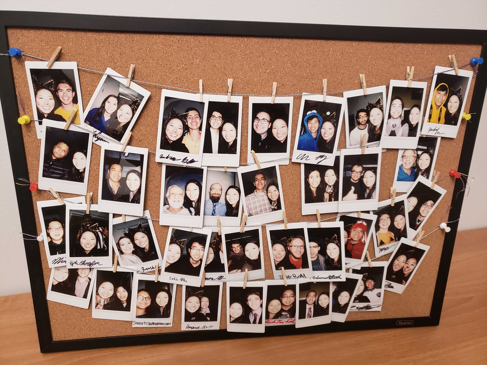
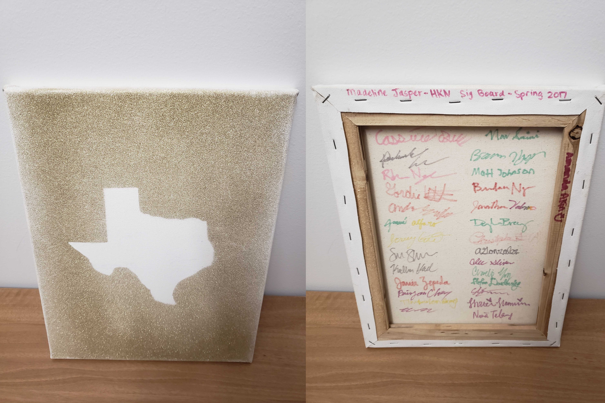

| Attend two general meetings (5 total) |
|---|
| General meetings are held Tuesday nights. |
| Dates are available on our calendar. |
| If you cannot attend all of the meetings during the semester you are pledging due to any conflict (including class or work), please contact the recording secretary. |
| Complete the following events |
| Two social events |
| One society event |
| Two miscellaneous event (Service, Social, Fireside, Tech Talks) |
| One Big/Little social event (Can count towards 2 social requirements) |
| Miscellaneous |
| Turn in a completed signature book. Requirements are below. Example form |
| Coffee chat |
| Attend the pledge interview |
| Attend Induction |
| Pay dues of $100. |
Requirements for Pledging
The requirements fall under three categories: General Meetings, HKN Hours and Events, and Miscellaneous. The requirements for all four categories must be met to successfully pledge. Requirements vary based on current status as an undergraduate or
graduate student.
Requirements for Undergraduates
| Attend ALL general meetings (5 total) |
|---|
| Attend ALL pledge social hours (5 total) |
| General meetings and pledge social hours are held Tuesday nights. |
| Dates are available on our calendar. |
| If you cannot attend all of the meetings during the semester you are pledging due to any conflict (including class or work), please contact the recording secretary. |
| Complete the following events and talks: |
| Three social (or Virtual Service) events |
| One society event (Tech Core Night, Peer Advising Night, Sig Party, Graduate Student Panel) |
| Two Firesides |
| Two Big/Little social event (this also counts toward the 3 social requirement) |
| E-week requirements |
| Three e-week events |
| Help HKN prep/host an event |
| Miscellaneous |
| Turn in a completed signature book. Requirements are below. Example form |
| Coffee chat |
| Attend the pledge interview |
| Attend Induction |
| Pay dues of $100. |
Some notes:
- Excess hours go towards the Best Pledge Award.
- Hours from previous semesters do not carry over to subsequent semesters if you do not complete the pledge process.
- If you do not attend initiation, you cannot be a member of Eta Kappa Nu. Plan ahead!
- We collect one-time dues of $100 and send them to HKN National Headquarters.
- Membership dues include a lifetime subscription to The Bridge.
- If you have any concerns about dues, please feel free to contact an officer, and we can work something out.
Please note that some variations will occur from semester to semester, but the basic pledge requirements will always be the same.
The Signature Book
| Required signatures |
|---|
| interview four pledges |
| interview ten actives |
| interview ALL HKN officers |
| Suggested Interview Questions |
| What's your favorite thing about HKN? |
| What's your tech core (if you've decided on one)? |
| What's your favorite ECE course? |
| Get creative! The goal of the sig book is to help you get to know your peers in HKN. |
Guidelines
- The design of the signature book is up to you. It does not need to be in book form.
- Your name should be prominently located on your signature book.
- Be friendly when asking for an interview.
- Try to keep all meetings online using Zoom, Messenger, or Facetime
- At the end-of-semester banquet, an award will be given for the best sig book.
Example Sig Books

Robin Franklin, Fall 2017

Cynthia Wu, Fall 2017

Madeline Jasper, Spring 2017
Pledges Mailing List
Each semester we place all of our pledges on the pledges mailing list in order to communicate with them during the pledge process. If you are a pledge but are not on the pledges list please contact an officer to get yourself added.